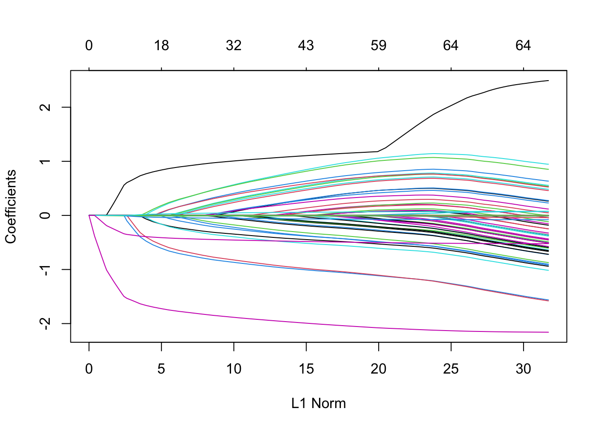
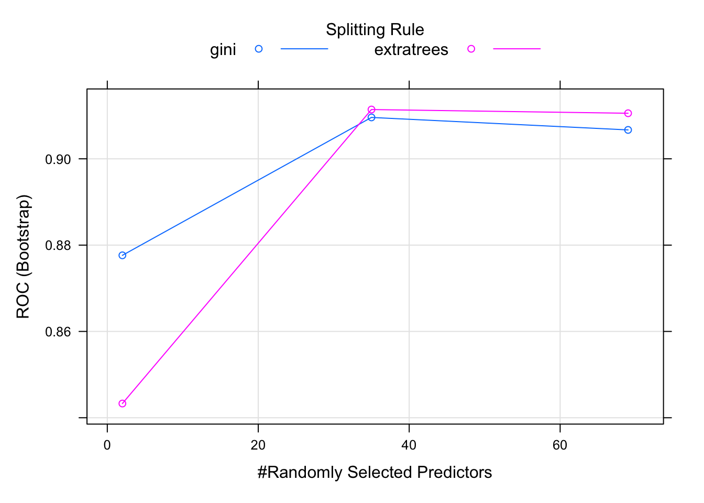
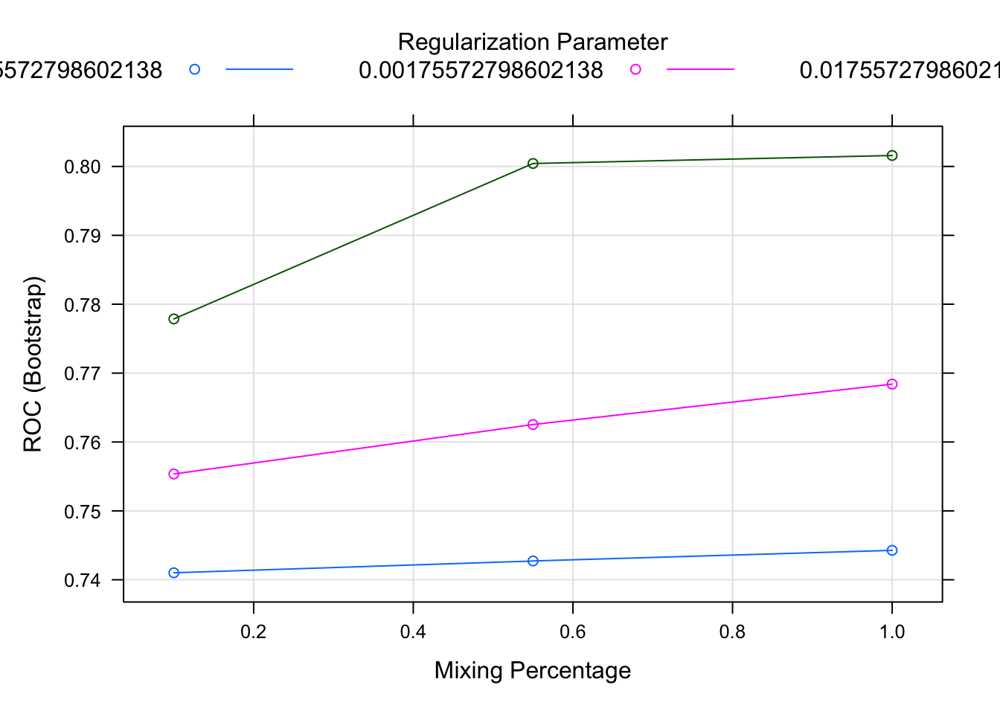
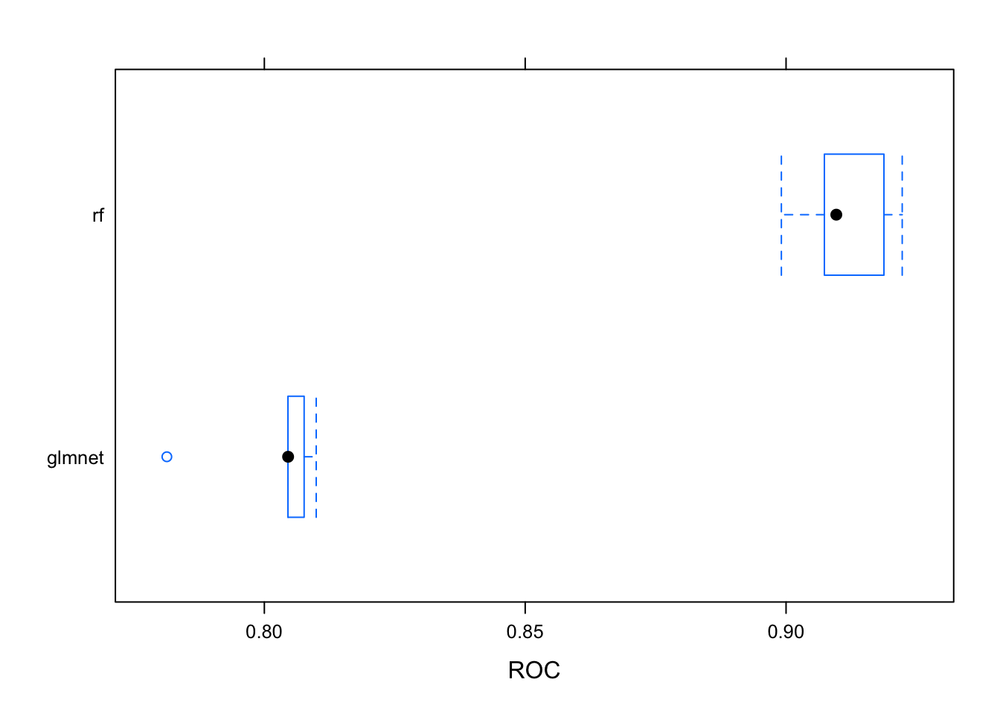
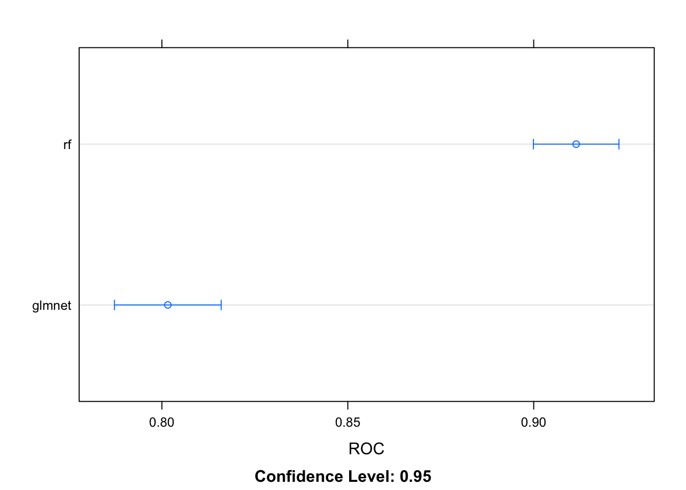
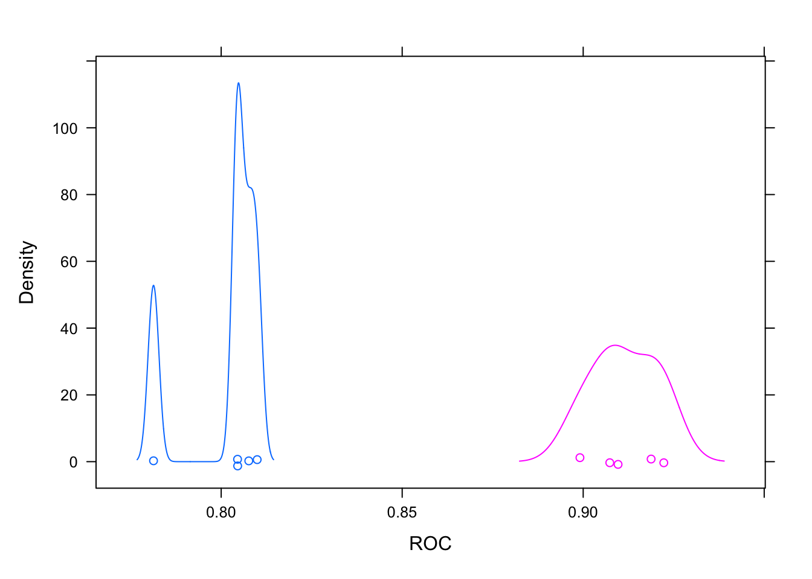
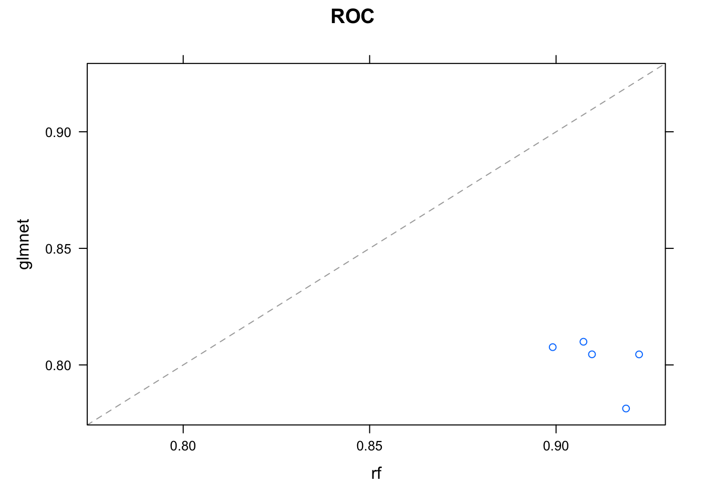

Chapter 18 More modeling
library(tidyverse)
library(caret)18.1 glmnet models
glmnet is an extension of glm models with built-in variable selection, which could be really nice for pituitary adenoma classification purposes.
glmnet helps deal with colinearity (correlation between predictors in a model) and small samples, both of which are relevant to my pituitary adenoma data.
glmnet relies on two forms of regression:
- Lasso regression, which penalizes the number of nonzero coefficients
- Ridge regression, which penalizes the absolute magnitude of the coefficients
- Both sorts of regression can be combined
glmnet attempst to find a simple model with few nonzero coefficients or small absolute magnitude of coefficients.
glmnet pairs well with random forest models, since it often yields different results.
18.1.1 Parameters for tuning glmnet models
alpha(0,1): pure ridge at zero, pure lasso at onelambda(0,infinity): size of the penalty
For a single value of alpha, glmnet fits all values of lambda simultaneously. This is “many models for the price of one.” This is known as the “submodel trick.”
Zach Mayer uses a dataset that I can’t seem to locate, so I’ll switch to the code used by Stefania Ashby, which uses iris: https://neurospection.netlify.app/post/machine-learning-basics-with-caret/#a-classification-example
18.1.2 An iris example of glmnet
Ashby terms this use of glmnet as an elastic net. In keeping with her practice, which splits the dataset in order to have a test group on which to estimate the accuracy of the model, we’ll start with that (comments are Ashby’s):
iris_data <- data.frame(iris)
set.seed(28)
# Split the original dataset into a training set and a testing set
# We are using species to partition so that we don't end up with an uneven amount of one species in either training or testing sets.
partition_data <- createDataPartition(iris_data$Species, times = 1, p = .7, list = FALSE)
# Assign sets
training.set <- iris_data[partition_data, ] # Training set
testing.set <- iris_data[-partition_data, ] # Testing set
# Sanity Check: Is data partitioned appropriately, do we have equal numbers of observations for our outcome variable?
nrow(training.set)## [1] 105summary(training.set$Species)## setosa versicolor virginica
## 35 35 35nrow(testing.set)## [1] 45summary(testing.set$Species)## setosa versicolor virginica
## 15 15 15Now to build Ashby’s model:
# Specify the cross-validation method(s)
train.control <- trainControl(method = "cv", number = 10, # k-folds CV with k=10
classProbs = TRUE,
savePredictions = TRUE,
summaryFunction = multiClassSummary)# save predictions for ROC
train.control2 <- trainControl(method = "LOOCV",
classProbs = TRUE,
savePredictions = TRUE,
summaryFunction = multiClassSummary) # leave-one-out CV, and save predictions for ROC
# Example Model Tuning for Elastic Net
glmnet.info <- getModelInfo("glmnet")
glmnet.info$glmnet$parameters## parameter class label
## 1 alpha numeric Mixing Percentage
## 2 lambda numeric Regularization Parametertune.grid <- expand.grid(alpha = 0:1,
lambda = seq(0.0001, 1, length = 100))
# Use the train function to perform model training
glmnet.model <- train(Species ~. ,
data = training.set,
method = "glmnet",
trControl = train.control2, # change this to train.control to try k-fold CV
#tuneGrid = tune.grid,
preProc = c("center"))
# Look at the results from model training and ROC Curves
glmnet.model## glmnet
##
## 105 samples
## 4 predictor
## 3 classes: 'setosa', 'versicolor', 'virginica'
##
## Pre-processing: centered (4)
## Resampling: Leave-One-Out Cross-Validation
## Summary of sample sizes: 104, 104, 104, 104, 104, 104, ...
## Resampling results across tuning parameters:
##
## alpha lambda logLoss AUC prAUC Accuracy Kappa
## 0.10 0.0008702402 0.08736163 0.9971429 0.9660011 0.9619048 0.9428571
## 0.10 0.0087024017 0.16409724 0.9959184 0.9637131 0.9523810 0.9285714
## 0.10 0.0870240166 0.37866105 0.9752381 0.9178787 0.8952381 0.8428571
## 0.55 0.0008702402 0.08010236 0.9971429 0.9660011 0.9619048 0.9428571
## 0.55 0.0087024017 0.14944538 0.9961905 0.9641325 0.9523810 0.9285714
## 0.55 0.0870240166 0.40645575 0.9778231 0.9189341 0.9142857 0.8714286
## 1.00 0.0008702402 0.07535390 0.9975510 0.9667069 0.9619048 0.9428571
## 1.00 0.0087024017 0.12708308 0.9953741 0.9626165 0.9523810 0.9285714
## 1.00 0.0870240166 0.41964944 0.9790476 0.9140139 0.9142857 0.8714286
## Mean_F1 Mean_Sensitivity Mean_Specificity Mean_Pos_Pred_Value
## 0.9618736 0.9619048 0.9809524 0.9628720
## 0.9523712 0.9523810 0.9761905 0.9526144
## 0.8957327 0.8952381 0.9476190 0.8969263
## 0.9618736 0.9619048 0.9809524 0.9628720
## 0.9523712 0.9523810 0.9761905 0.9526144
## 0.9141280 0.9142857 0.9571429 0.9161184
## 0.9618736 0.9619048 0.9809524 0.9628720
## 0.9523712 0.9523810 0.9761905 0.9526144
## 0.9142682 0.9142857 0.9571429 0.9144880
## Mean_Neg_Pred_Value Mean_Precision Mean_Recall Mean_Detection_Rate
## 0.9812092 0.9628720 0.9619048 0.3206349
## 0.9762537 0.9526144 0.9523810 0.3174603
## 0.9475283 0.8969263 0.8952381 0.2984127
## 0.9812092 0.9628720 0.9619048 0.3206349
## 0.9762537 0.9526144 0.9523810 0.3174603
## 0.9576774 0.9161184 0.9142857 0.3047619
## 0.9812092 0.9628720 0.9619048 0.3206349
## 0.9762537 0.9526144 0.9523810 0.3174603
## 0.9572022 0.9144880 0.9142857 0.3047619
## Mean_Balanced_Accuracy
## 0.9714286
## 0.9642857
## 0.9214286
## 0.9714286
## 0.9642857
## 0.9357143
## 0.9714286
## 0.9642857
## 0.9357143
##
## Accuracy was used to select the optimal model using the largest value.
## The final values used for the model were alpha = 0.1 and lambda = 0.0008702402.# Test the predictive ability of the model in the testing set
glmnet.predict <- predict(glmnet.model, testing.set) # Predict values in the testing set
postResample(glmnet.predict, testing.set$Species) # the accuracy of the model## Accuracy Kappa
## 0.9777778 0.9666667confusionMatrix(glmnet.predict, testing.set$Species) # Lets see the breakdown of how well our model worked## Confusion Matrix and Statistics
##
## Reference
## Prediction setosa versicolor virginica
## setosa 15 0 0
## versicolor 0 14 0
## virginica 0 1 15
##
## Overall Statistics
##
## Accuracy : 0.9778
## 95% CI : (0.8823, 0.9994)
## No Information Rate : 0.3333
## P-Value [Acc > NIR] : < 2.2e-16
##
## Kappa : 0.9667
##
## Mcnemar's Test P-Value : NA
##
## Statistics by Class:
##
## Class: setosa Class: versicolor Class: virginica
## Sensitivity 1.0000 0.9333 1.0000
## Specificity 1.0000 1.0000 0.9667
## Pos Pred Value 1.0000 1.0000 0.9375
## Neg Pred Value 1.0000 0.9677 1.0000
## Prevalence 0.3333 0.3333 0.3333
## Detection Rate 0.3333 0.3111 0.3333
## Detection Prevalence 0.3333 0.3111 0.3556
## Balanced Accuracy 1.0000 0.9667 0.9833Ashby’s example helps out a lot and should be used as a model of the workflow for studying pitadtma. Imputation will be necessary to work with that dataset, so I’ll return to the DataCamp course for that.
18.2 Imputation discussion
This example shows how to generate some missing values, and to use imputation overcome these.
data("mtcars")
set.seed(42)
mtcars[sample(1:nrow(mtcars), 10), "hp"] <- NA
Y <- mtcars$mpg
X <- mtcars[,2:4]
# model <- train(X,Y) #This fails, because of the NAs. Try imputation.
median_model <- train(
X,
Y,
preProcess = "medianImpute"
)## note: only 2 unique complexity parameters in default grid. Truncating the grid to 2 .print(median_model)## Random Forest
##
## 32 samples
## 3 predictor
##
## Pre-processing: median imputation (3)
## Resampling: Bootstrapped (25 reps)
## Summary of sample sizes: 32, 32, 32, 32, 32, 32, ...
## Resampling results across tuning parameters:
##
## mtry RMSE Rsquared MAE
## 2 2.758439 0.8106146 2.260273
## 3 2.729423 0.8123802 2.224138
##
## RMSE was used to select the optimal model using the smallest value.
## The final value used for the model was mtry = 3.Data that is missing not at random offers special challenges.
mtcars[mtcars$disp < 140, "hp"] <- NA
Y <- mtcars$mpg
X <- mtcars[,2:4]
# Start with median imputation:
model <- train(
X,
Y,
method = "glm",
preProcess = "medianImpute"
)
print(min(model$results$RMSE))## [1] 3.437128set.seed(42)
model <- train(
X,
Y,
method = "glm",
preProcess = c("knnImpute")
)
print(min(model$results$RMSE))## [1] 3.13595818.3 Multiple preprocessing methods
Zach Mayer offers the following cheat sheet for preprocessing:
- Start with median imputation (if you’re using it)
- Try KNN imputation if data NOT missing at random
- For linear models (lm, glm, glmnet) always center and scale
- Tree-based models (random forest, gbm) don’t need much preprocessing
data("mtcars")
set.seed(42)
mtcars[sample(1:nrow(mtcars), 10), "hp"] <- NA
Y <- mtcars$mpg
X <- mtcars[,2:4] # missing at random
set.seed(42)
model <- train(
X,
Y,
method = "glm",
preProcess = c("medianImpute", "center", "scale")
)
print(min(model$results$RMSE))## [1] 3.079732set.seed(42)
model <- train(
X,
Y,
method = "glm",
preProcess = c("medianImpute", "center", "scale", "pca")
)
print(min(model$results$RMSE)) # with pca applied## [1] 3.0358118.4 Handling low-information predictors
Constant or nearly constant values mess up models, or at the very least provide little useful information. They are usually removed, at least when addressing balanced datasets. For imbalanced datasets, leaving near zero variance predictors in the dataset is probably advised.
NOTE: using PCA as a preprocessing step can accomplish much the same thing as removing near zero variance predictors, so is worth trying. See above for an example using PCA.
18.5 Max Kuhn on reusing a trainControl
Note that the outcome (churn/no churn) is binary and that the dataset is somewhat imbalanced.
library(C50)
library(modeldata)
data(mlc_churn)
set.seed(1)
inTrainingSet <- createDataPartition(mlc_churn$churn,
p = 0.75,
list = FALSE)
churnTrain <- mlc_churn[inTrainingSet,]
churnTest <- mlc_churn[-inTrainingSet,]
glimpse(churnTrain)## Rows: 3,751
## Columns: 20
## $ state <fct> KS, NJ, OH, MA, LA, IN, RI, IA, IA, NY, …
## $ account_length <int> 128, 137, 84, 121, 117, 65, 74, 168, 62,…
## $ area_code <fct> area_code_415, area_code_415, area_code_…
## $ international_plan <fct> no, no, yes, no, no, no, no, no, no, no,…
## $ voice_mail_plan <fct> yes, no, no, yes, no, no, no, no, no, no…
## $ number_vmail_messages <int> 25, 0, 0, 24, 0, 0, 0, 0, 0, 0, 27, 0, 0…
## $ total_day_minutes <dbl> 265.1, 243.4, 299.4, 218.2, 184.5, 129.1…
## $ total_day_calls <int> 110, 114, 71, 88, 97, 137, 127, 96, 70, …
## $ total_day_charge <dbl> 45.07, 41.38, 50.90, 37.09, 31.37, 21.95…
## $ total_eve_minutes <dbl> 197.4, 121.2, 61.9, 348.5, 351.6, 228.5,…
## $ total_eve_calls <int> 99, 110, 88, 108, 80, 83, 148, 71, 76, 9…
## $ total_eve_charge <dbl> 16.78, 10.30, 5.26, 29.62, 29.89, 19.42,…
## $ total_night_minutes <dbl> 244.7, 162.6, 196.9, 212.6, 215.8, 208.8…
## $ total_night_calls <int> 91, 104, 89, 118, 90, 111, 94, 128, 99, …
## $ total_night_charge <dbl> 11.01, 7.32, 8.86, 9.57, 9.71, 9.40, 8.8…
## $ total_intl_minutes <dbl> 10.0, 12.2, 6.6, 7.5, 8.7, 12.7, 9.1, 11…
## $ total_intl_calls <int> 3, 5, 7, 7, 4, 6, 5, 2, 6, 9, 4, 3, 2, 4…
## $ total_intl_charge <dbl> 2.70, 3.29, 1.78, 2.03, 2.35, 3.43, 2.46…
## $ number_customer_service_calls <int> 1, 0, 2, 3, 1, 4, 0, 1, 4, 4, 1, 3, 1, 0…
## $ churn <fct> no, no, no, no, no, yes, no, no, no, yes…glimpse(churnTest)## Rows: 1,249
## Columns: 20
## $ state <fct> OH, OK, AL, MO, WV, MT, VA, AZ, SC, WY, …
## $ account_length <int> 107, 75, 118, 147, 141, 95, 76, 130, 111…
## $ area_code <fct> area_code_415, area_code_415, area_code_…
## $ international_plan <fct> no, yes, yes, yes, yes, no, no, no, no, …
## $ voice_mail_plan <fct> yes, no, no, no, yes, no, yes, no, no, y…
## $ number_vmail_messages <int> 26, 0, 0, 0, 37, 0, 33, 0, 0, 39, 33, 0,…
## $ total_day_minutes <dbl> 161.6, 166.7, 223.4, 157.0, 258.6, 156.6…
## $ total_day_calls <int> 123, 113, 98, 79, 84, 88, 66, 112, 103, …
## $ total_day_charge <dbl> 27.47, 28.34, 37.98, 26.69, 43.96, 26.62…
## $ total_eve_minutes <dbl> 195.5, 148.3, 220.6, 103.1, 222.0, 247.6…
## $ total_eve_calls <int> 103, 122, 101, 94, 111, 75, 65, 99, 102,…
## $ total_eve_charge <dbl> 16.62, 12.61, 18.75, 8.76, 18.87, 21.05,…
## $ total_night_minutes <dbl> 254.4, 186.9, 203.9, 211.8, 326.4, 192.3…
## $ total_night_calls <int> 103, 121, 118, 96, 97, 115, 108, 78, 105…
## $ total_night_charge <dbl> 11.45, 8.41, 9.18, 9.53, 14.69, 8.65, 7.…
## $ total_intl_minutes <dbl> 13.7, 10.1, 6.3, 7.1, 11.2, 12.3, 10.0, …
## $ total_intl_calls <int> 3, 3, 6, 6, 5, 5, 5, 19, 6, 3, 6, 2, 5, …
## $ total_intl_charge <dbl> 3.70, 2.73, 1.70, 1.92, 3.02, 3.32, 2.70…
## $ number_customer_service_calls <int> 1, 3, 0, 0, 0, 3, 1, 0, 2, 0, 3, 3, 3, 3…
## $ churn <fct> no, no, no, no, no, no, no, no, no, no, …table(churnTrain$churn) / nrow(churnTrain)##
## yes no
## 0.1415623 0.8584377table(churnTest$churn) / nrow(churnTest) ##
## yes no
## 0.1409127 0.8590873So the test and training sets have approximately equal proportions of churn.
Now, in order to reuse trainControl, it’s helpful to be certain that the model encounters exactly the same folds in cross validation.
myFolds <- createFolds(churnTrain$churn, k = 5)
# Compare class distribution
i <- myFolds$Fold1
table(churnTrain$churn[i]) / length(i)##
## yes no
## 0.1413333 0.8586667myControl <- trainControl(
summaryFunction = twoClassSummary,
classProbs = TRUE, #Important!
verboseIter = TRUE,
savePredictions = TRUE,
index = myFolds
)Now that the folds and trainControl are established, we can go on to make some models.
First a glmnet model:
set.seed(42)
model_glmnet <- train(
churn ~ .,
churnTrain,
metric = "ROC",
method = "glmnet",
tune.grid = expand.grid(
alpha = 0:1,
lambda = 0:10 / 10
),
trControl = myControl
)## + Fold1: alpha=0.10, lambda=0.01756
## - Fold1: alpha=0.10, lambda=0.01756
## + Fold1: alpha=0.55, lambda=0.01756
## - Fold1: alpha=0.55, lambda=0.01756
## + Fold1: alpha=1.00, lambda=0.01756
## - Fold1: alpha=1.00, lambda=0.01756
## + Fold2: alpha=0.10, lambda=0.01756
## - Fold2: alpha=0.10, lambda=0.01756
## + Fold2: alpha=0.55, lambda=0.01756
## - Fold2: alpha=0.55, lambda=0.01756
## + Fold2: alpha=1.00, lambda=0.01756
## - Fold2: alpha=1.00, lambda=0.01756
## + Fold3: alpha=0.10, lambda=0.01756
## - Fold3: alpha=0.10, lambda=0.01756
## + Fold3: alpha=0.55, lambda=0.01756
## - Fold3: alpha=0.55, lambda=0.01756
## + Fold3: alpha=1.00, lambda=0.01756
## - Fold3: alpha=1.00, lambda=0.01756
## + Fold4: alpha=0.10, lambda=0.01756
## - Fold4: alpha=0.10, lambda=0.01756
## + Fold4: alpha=0.55, lambda=0.01756
## - Fold4: alpha=0.55, lambda=0.01756
## + Fold4: alpha=1.00, lambda=0.01756
## - Fold4: alpha=1.00, lambda=0.01756
## + Fold5: alpha=0.10, lambda=0.01756
## - Fold5: alpha=0.10, lambda=0.01756
## + Fold5: alpha=0.55, lambda=0.01756
## - Fold5: alpha=0.55, lambda=0.01756
## + Fold5: alpha=1.00, lambda=0.01756
## - Fold5: alpha=1.00, lambda=0.01756
## Aggregating results
## Selecting tuning parameters
## Fitting alpha = 1, lambda = 0.0176 on full training setplot(model_glmnet)plot(model_glmnet$finalModel)
Let’s try a random forest model.
set.seed(42)
churnTrain$churn <- factor(
churnTrain$churn, levels = c("no", "yes")
)
model_rf <- train(
churn ~ .,
churnTrain,
metric = "ROC",
method = "ranger",
trControl = myControl
)## + Fold1: mtry= 2, min.node.size=1, splitrule=gini
## - Fold1: mtry= 2, min.node.size=1, splitrule=gini
## + Fold1: mtry=35, min.node.size=1, splitrule=gini
## - Fold1: mtry=35, min.node.size=1, splitrule=gini
## + Fold1: mtry=69, min.node.size=1, splitrule=gini
## - Fold1: mtry=69, min.node.size=1, splitrule=gini
## + Fold1: mtry= 2, min.node.size=1, splitrule=extratrees
## - Fold1: mtry= 2, min.node.size=1, splitrule=extratrees
## + Fold1: mtry=35, min.node.size=1, splitrule=extratrees
## - Fold1: mtry=35, min.node.size=1, splitrule=extratrees
## + Fold1: mtry=69, min.node.size=1, splitrule=extratrees
## - Fold1: mtry=69, min.node.size=1, splitrule=extratrees
## + Fold2: mtry= 2, min.node.size=1, splitrule=gini
## - Fold2: mtry= 2, min.node.size=1, splitrule=gini
## + Fold2: mtry=35, min.node.size=1, splitrule=gini
## - Fold2: mtry=35, min.node.size=1, splitrule=gini
## + Fold2: mtry=69, min.node.size=1, splitrule=gini
## - Fold2: mtry=69, min.node.size=1, splitrule=gini
## + Fold2: mtry= 2, min.node.size=1, splitrule=extratrees
## - Fold2: mtry= 2, min.node.size=1, splitrule=extratrees
## + Fold2: mtry=35, min.node.size=1, splitrule=extratrees
## - Fold2: mtry=35, min.node.size=1, splitrule=extratrees
## + Fold2: mtry=69, min.node.size=1, splitrule=extratrees
## - Fold2: mtry=69, min.node.size=1, splitrule=extratrees
## + Fold3: mtry= 2, min.node.size=1, splitrule=gini
## - Fold3: mtry= 2, min.node.size=1, splitrule=gini
## + Fold3: mtry=35, min.node.size=1, splitrule=gini
## - Fold3: mtry=35, min.node.size=1, splitrule=gini
## + Fold3: mtry=69, min.node.size=1, splitrule=gini
## - Fold3: mtry=69, min.node.size=1, splitrule=gini
## + Fold3: mtry= 2, min.node.size=1, splitrule=extratrees
## - Fold3: mtry= 2, min.node.size=1, splitrule=extratrees
## + Fold3: mtry=35, min.node.size=1, splitrule=extratrees
## - Fold3: mtry=35, min.node.size=1, splitrule=extratrees
## + Fold3: mtry=69, min.node.size=1, splitrule=extratrees
## - Fold3: mtry=69, min.node.size=1, splitrule=extratrees
## + Fold4: mtry= 2, min.node.size=1, splitrule=gini
## - Fold4: mtry= 2, min.node.size=1, splitrule=gini
## + Fold4: mtry=35, min.node.size=1, splitrule=gini
## - Fold4: mtry=35, min.node.size=1, splitrule=gini
## + Fold4: mtry=69, min.node.size=1, splitrule=gini
## - Fold4: mtry=69, min.node.size=1, splitrule=gini
## + Fold4: mtry= 2, min.node.size=1, splitrule=extratrees
## - Fold4: mtry= 2, min.node.size=1, splitrule=extratrees
## + Fold4: mtry=35, min.node.size=1, splitrule=extratrees
## - Fold4: mtry=35, min.node.size=1, splitrule=extratrees
## + Fold4: mtry=69, min.node.size=1, splitrule=extratrees
## - Fold4: mtry=69, min.node.size=1, splitrule=extratrees
## + Fold5: mtry= 2, min.node.size=1, splitrule=gini
## - Fold5: mtry= 2, min.node.size=1, splitrule=gini
## + Fold5: mtry=35, min.node.size=1, splitrule=gini
## - Fold5: mtry=35, min.node.size=1, splitrule=gini
## + Fold5: mtry=69, min.node.size=1, splitrule=gini
## - Fold5: mtry=69, min.node.size=1, splitrule=gini
## + Fold5: mtry= 2, min.node.size=1, splitrule=extratrees
## - Fold5: mtry= 2, min.node.size=1, splitrule=extratrees
## + Fold5: mtry=35, min.node.size=1, splitrule=extratrees
## - Fold5: mtry=35, min.node.size=1, splitrule=extratrees
## + Fold5: mtry=69, min.node.size=1, splitrule=extratrees
## - Fold5: mtry=69, min.node.size=1, splitrule=extratrees
## Aggregating results
## Selecting tuning parameters
## Fitting mtry = 35, splitrule = extratrees, min.node.size = 1 on full training setplot(model_rf)
18.6 Comparing models
Fundamental to this is making sure that the models were fit on exactly the same data! We select the model with the highest AUC and the lowest standard deviation in AUC.
The resamples() function is very useful.
# First, make a list
model_list <- list(
glmnet = model_glmnet,
rf = model_rf
)
# Collect resamples from the CV folds
resamps <- resamples(model_list)
resamps##
## Call:
## resamples.default(x = model_list)
##
## Models: glmnet, rf
## Number of resamples: 5
## Performance metrics: ROC, Sens, Spec
## Time estimates for: everything, final model fit# Summarize the results
summary(resamps)##
## Call:
## summary.resamples(object = resamps)
##
## Models: glmnet, rf
## Number of resamples: 5
##
## ROC
## Min. 1st Qu. Median Mean 3rd Qu. Max. NA's
## glmnet 0.7813141 0.8045259 0.8045561 0.8015931 0.8076270 0.8099425 0
## rf 0.8991007 0.9073443 0.9096319 0.9114213 0.9187639 0.9222657 0
##
## Sens
## Min. 1st Qu. Median Mean 3rd Qu. Max. NA's
## glmnet 0.04705882 0.09647059 0.1152941 0.09934961 0.1179245 0.1200000 0
## rf 0.98330745 0.98486025 0.9918478 0.98913043 0.9922360 0.9934006 0
##
## Spec
## Min. 1st Qu. Median Mean 3rd Qu. Max. NA's
## glmnet 0.9798137 0.9802019 0.9860248 0.9851708 0.9871894 0.9926242 0
## rf 0.5082353 0.5105882 0.5270588 0.5282664 0.5294118 0.5660377 0bwplot(resamps)
bwplot(resamps, metric = "ROC")
# The dotplot is the most elegant way to compare the performance of multiple models
dotplot(resamps, metric = "ROC")
densityplot(resamps, metric = "ROC")
xyplot(resamps, metric = "ROC")